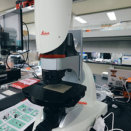
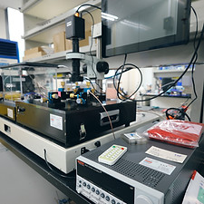
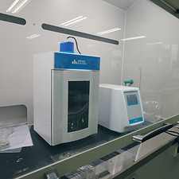
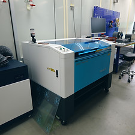
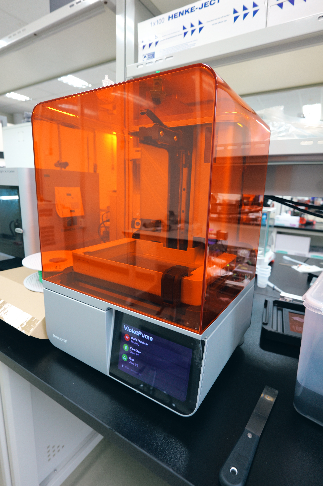
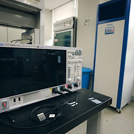
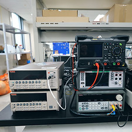
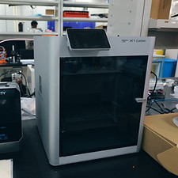
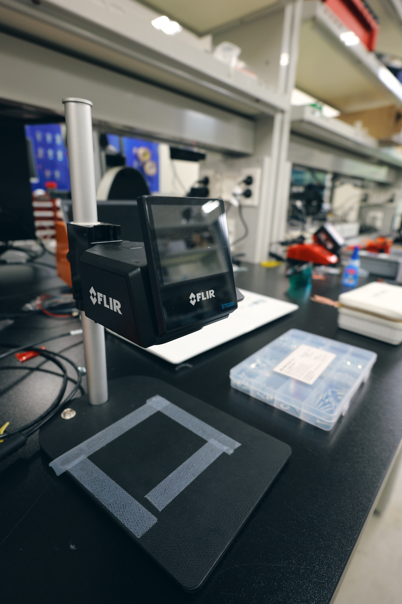
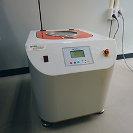

Measurement basics
Learn reliable setup discipline
Students gain experience with calibration, repeatability, and clean data acquisition instead of only operating instruments at a superficial level.
Research Environment
This facility overview shows the kinds of fabrication, measurement, and process work that can be done directly inside the lab.
Instrumentation matters because it shapes how quickly students can prototype, test, and learn from failure.
Measurement basics
Students gain experience with calibration, repeatability, and clean data acquisition instead of only operating instruments at a superficial level.
Fabrication practice
3D printing, mixing, and process tools help students move from design ideas to testable physical systems without long external delays.
Reporting quality
The facility is not only for producing samples. It supports the disciplined measurement workflow needed for figures, comparisons, and publication claims.
Featured instruments
Each photo uses the same frame size so the gallery reads consistently, and every caption now explains what the instrument is used for in actual lab work.










Instrument archive
The full list remains data-driven so the facility inventory can be updated independently from the page layout.
| No. | Instrument Name | Manufacturer | Model | Specification |
|---|
Hands-on training
New students are trained on real equipment early so they can move faster from idea to measurement to iteration.
Contact
333, Techno jungang-daero, Hyeonpung-eup, Dalseong-gun, Daegu, Republic of Korea, 42988
If you want to know how the facility connects to your research interests, leave your email for follow-up.